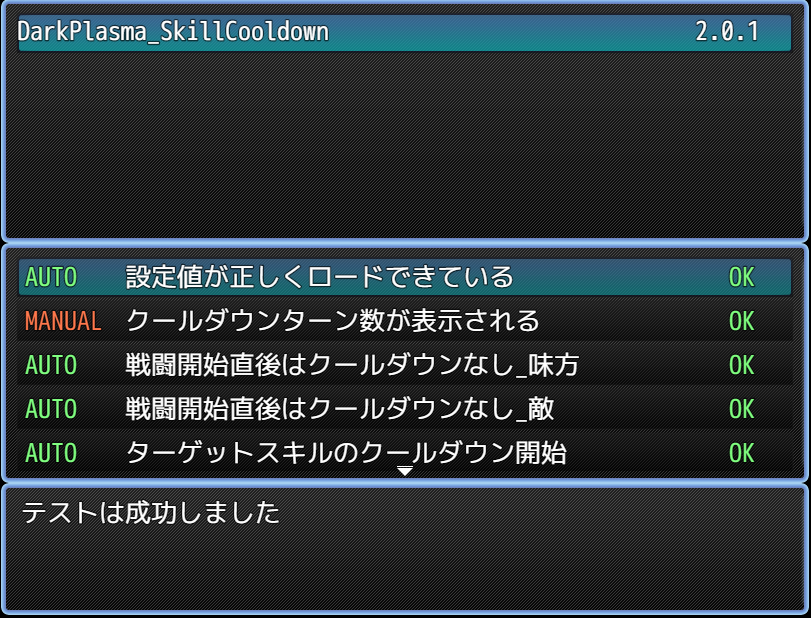

RPGツクールMZのプラグイン半自動テストの仕組み
目次
RPGツクールMZのプラグインを半自動テストするような仕組みを作ったので、その概要を説明します。
経緯
プログラムはバグるものです。RPGツクールのプラグインといえど、例外ではありません。
バグの要因はたくさんあります。
単純にロジックを間違えていたり、typoしたりすることもありますし、動作確認が行き届かなかったりしてバグが残ったり、機能追加や修正の際に別のバグを仕込むこともあります。
世に出ているサービスや製品も同様にバグが混入している可能性はありますが、ではそれらはどのようにしてバグを取り除いたり防いでいるのでしょうか。
実際に動作させて目視確認している箇所もあるとは思いますが、それよりも確実性の高い方法、自動テストを行っているケースが多いでしょう。1
筆者もバグ報告を受けるたびに、RPGツクールのプラグインでも自動テストができないものか、と頭を捻っていたのですが、ついに方針を思いついたので実行してみたのです。
方針
まず、プラグイン内に定義したメソッドの単体テストを考えました。
各メソッドの挙動が正しいことを機械的に確認できれば、その組み合わせで実装されるプラグインのバグも随分減らせるはずです。
しかし、そう簡単な話では済みません。
プラグインで書くようなメソッドは、RPGツクールのコアスクリプトの処理のどこかに挟まって、ゲームを元あった状態から別の状態へ変化させるようなものがほとんどです。
この元あった状態を機械的に再現するのがかなりしんどく、ゲームを起動せずに、全自動で汎用的に単体テストを実行するような仕組みを実現できそうにないのです。
テストデータやモック2をいちいちプログラムで定義する労力が現実的でないわけです。
そこで、ゲームを起動して、対象プラグインの効果が現れる状況への遷移は手動で行い、その状態の変化だけ機械的に確認することにしました。
状態の変化を確認するだけであればNodejsの assert を用いれば良さそうですが、今回はせっかくなのでゲーム中にテスト項目と結果を表示したり、失敗してもエラーを投げるのではなくゲームを続行したいなと思ったので、自前でテストフレームワーク3的なものを書いています。
ついでに、表示関係は機械的に状態を確認するだけでは微妙なので、目視確認用のテストケースも管理できるようにしました。
設計
TestBaseプラグイン
まず、テストケースを登録してその成否を判定、表示するようなTestBaseプラグインを作りました。
本来であれば1プラグインに多くの機能を持たせるべきではないのですが、自動テスト用のベースクラスをいくつも用意するのもそれはそれでしんどいので、テスト用のベースとなる機能はここに詰め込みました。
TestCaseプラグインの読み込み
この後、テストしたい対象のプラグインごとにTestCaseプラグインを作るのですが、それをプラグイン名から解決して読み込む機能をつけました。
つまり、TestCaseプラグインはjs/pluginsフォルダ内に置いておけばいちいちツクールエディタ上から追加する必要をなくしました。
この設計については悩みました。自動で探してロードするために、起動時のパフォーマンスを少し犠牲にする必要があるからです。
今後、TestCaseプラグインが増えるごとに起動時間が伸びていきますが、そうなったらそうなった時に考えることにしました。
プラグインパラメータで指定したTestCaseをOFFにすることくらいはできそうですし。
なお、このためにfsを利用したのでブラウザ向けのプラグインをテストすることはできませんが、ブラウザ環境よりもアプリケーションを意識したいため、それは許容しています。
TestCaseプラグインからのテストケース登録
ゲーム起動後、TestCaseプラグインをロードし終わった後に、各TestCaseプラグインからテストケースを登録できるメソッドをScene_Bootに追加しています。
ここで登録されたテストケースを、後で定義するテストケースシーンで一覧表示します。
登録後、すぐに起動するタイミングを提供するためにdoTestOnBootメソッドも追加しています。
テストケース一覧表示シーン
ゲーム中、プラグインコマンドで呼び出せるテストケース一覧表示シーンを作りました。
ここで一覧を表示し、その成否がプラグインごとに確認できます。
また、目視確認する必要のあるものについてはここで確認したチェックをつけられるようにもしました。
戦闘中にも確認したいケースはありそうでしたが、戦闘シーンにウィンドウを追加するのは割と面倒なので、やめておきました。
テスト用メソッドの定義
テストフレームワークでよく見るmustBeHogehogeを定義しました。
TestCaseプラグインではこれらを用いて、テストケースを登録します。
この辺りは睡魔と戦いながら書いていたので、クラスの命名がちょっと微妙な感じもします。
TestCaseプラグイン
テスト対象プラグインに対して、末尾に_Testと名前をつけてTestCaseプラグインを書きます。
Scene_BootのdefineTestCaseでテストケースを登録し、$testTargetPlugins.doTestをテスト可能なタイミングで呼び出して自動テストを実行します。
各プラグイン向けに、できるだけ本質的でないコードを省けるような形にしたかったのですが、割と睡魔に負けて雑になってるところがちらほら。
addTestCaseやdoTestは共通コードをimportに任せて、rollupで自動生成させちゃいたいですね。
参考: rollupを利用した、RPGツクールMZのプラグインを快適に書ける仕組み
運用

こんな感じで、テストケース一覧とその結果が表示されます。
スキルクールタイムのプラグインで試しにテストケースをゴリゴリ書いたのですが、意外にも自動テストできるケースが多くてやりやすいです。
また、パラメータ読み込みのテストが効くのも強いですね。だいたいバグるのはここって感じの傾向があり、これを機械的にチェックできるのはとても嬉しいです。
最下部のウィンドウにはテストが失敗した場合になぜ失敗したかを出力してくれるので、バグ取りもやりやすくなるでしょう。
各種テストケースの書き味にはやや改善の余地がありそうな気もしますが、ひとまずこれで運用してみようと思います。
嬉しいこと
半自動でテストできるのはもちろん嬉しいのですが、何よりテストケースをリポジトリ管理できるという点が素晴らしいです。
あれテストしたっけ？ これテストしたっけ？ みたいなテスト漏れがなくなり、仮に漏れが見つかったとしてもそのケースを足せば次からは漏れなくチェックできるというわけです。
一度使うだけだと労力に対してリターンがやや微妙に見えるかもしれませんが、長い期間メンテナンスしていく程に旨味が出てくる仕組みですね。